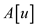
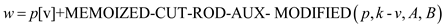
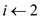

Consider the provided equation:
…… (1)
It is already given that:
Now, put value of in equation
(1).
in equation
(1).
Now, put value of in equation
(1).
in equation
(1).
Similarly,
Therefore,.
Rod cutting problem is defined as finding the maximum revenue that can be achieved by cutting the rod and selling the pieces. The output of the rod cutting problem is the way of cutting rod into pieces that achieves the maximum revenue.
• The Greedy strategy is applied to find solution of rod cutting problem. The greedy strategy finds a solution for the problem one selecting the optimal option in each stage (i.e., in the current situation).
• Therefore, to solve the rod cutting problem greedy strategy can be used to find the way of cutting pieces that maximizes the revenue.
Proving the given greedy strategy does not always produce an optimal solution:
The given greedy strategy selects the length of first piece i ( ) that has maximum density first. Then, it selects the length of the next piece that has maximum density in the remaining piece of length n-i.
This strategy does not always produce an optimal solution. To show this, consider the following example of rod of length 4, pricing table and density table:
|
Length (n) |
1 |
2 |
3 |
4 |
|
Price (pi) |
2 |
20 |
36 |
32 |
|
Density (pi/i) |
2 |
10 |
12 |
8 |
In the above example of rod cutting, length of rod is 4. Before applying the greedy strategy , sort the above table by the density (pi/i) .
|
Length (n) |
1 |
4 |
2 |
3 |
|
Price (pi) |
2 |
32 |
20 |
36 |
|
Density (pi/i) |
2 |
8 |
10 |
12 |
Now apply the greedy strategy to select the rod length. The greedy strategy initially selects the length of the rod(i) as 3, as the rod of length 3 has the maximum density and the revenue of 36. Then the strategy selects the rod of length 1. Therefore total revenue (Rg) for this greedy selection is calculated as follows:
But the selection (3,1) is not an optimal solution, because there is another choice that gives maximum revenue. Thus, the optimal solution is as follows:
Therefore, the given greedy strategy that selects the length of the rod piece according to density does not always gives the optimal solution.
Rod cutting is an example of dynamic programming in which a long steel rod is bought by a company and then they cut that rod into the pieces and then sells them to find the maximum revenue.
This problem is slightly different as from now every cut has a cost and user has to deduct that cost from the profit.
Now consider the modification of the rod cutting problem, in
which each cut incurs a fixed cost of , with each
rod price
, with each
rod price . So, the
final price of the rod obtained after subtracting this cost from
the actual price.
. So, the
final price of the rod obtained after subtracting this cost from
the actual price.
• Now, to achieve the above modification, use the original rod cutting method along with the added cost of the rod cut.
• The calculation performed on the basis of the following:
The modified rod cutting algorithm is as follows:
MODIFIED_CUT_ROD (p, n, c):
1. Assume an array w[0 ..n] is taken.
2. w[0] = 0
// Run a loop from 
3. for j=1 to n
// storing the cost in the array w
4.
// now cutting the rod at different position ranging from 1 to i
5. for i=1 to
6.
7. w[j] = q
8. return
Explanation of the above algorithm:
The above algorithm is the modified cut rod algorithm. The major modification required in the inner for loop, given in line number 5. Now, the inner for loop reads the value.
This changes reflects the fixed cost of making the cut, which is declared from the revenue.
In the above algorithm, user also handle the case in which user make no cuts (when I equals to j); in this case the total revenue will be given simply as p[j] takes care of the case of no cuts.
If user did not make these modifications, then in this case of no cuts, user would deducting c from the total revenue.
Rod cutting is an example of dynamic programming in which a long steel rod is bought by a company and then they cut that rod into the pieces and then sells them to find the maximum revenue.
In the rod cutting algorithm the array B stores the final
revenue of each sub problem of rod cut. The variablecontains the
price of length v and k is the length of the rod. The
modified MEMOIZED-CUT-ROD which returns not only the value but the
actual solution too is given below:
MEMOIZED-CUT-ROD- MODIFIED (p, k)
//Define two arrays of length k
1. Let and be new arrays
// Run a loop from initializing with a very large negative value
2.
3.
4. MEMOIZED-CUT-ROD-AUX- MODIFIED (p, k, A, B)
// printing the solution
5. for i=0 to 
6. print B[n]
In the above algorithm, MEMOIZED-CUT-ROD-AUX-MODIFIED is an auxiliary algorithm to help the MEMOIZED-CUT-ROD-MODIFIED for the calculation of maximum revenue.
MEMOIZED-CUT-ROD-AUX- MODIFIED (p, k, A, B)
//Check if then return

1. if
2. return
//Check if length is zero then assign zero to w
3. if 
4.
//Otherwise assign a very large negative value to w
5. else
// iterate the loop until all possible cuts of rod are considered once.
6. for
7. // array B contains the revenue for cut i
8.
9. 
10.
11.
12. return w and B.
Explanation:
• In above algorithm first MEMOIZED-CUT-ROD- MODIFIED is called.
• In this function there are two arrays: A is used to store the result and B is used to store the respective length of cut.
• After that MEMOIZED-CUT-ROD-AUX- MODIFIED is called in line 4 where the result and the actual value will be filled in array A and B.
• This function is same as provided in section 15.1 but with a little modification. Along with storing the profit value, the array B will take care of the length of cut.
• So as soon as program finds a new better solution, it stores the value of length at which cut is made.
• After the completion of MEMOIZED-CUT-ROD-AUX- MODIFIED, the value at nth index of array A will be the actual profit.
• Now program continues the MEMOIZED-CUT-ROD- MODIFIED, where the result is now ready to print.
• The while loop is used to print the actual answer. In this loop user first print the length of cut needed to get maximum profit and then reducing the subsequent problem by decreasing the value of n by the value of cut.
The definition of the Fibonacci numbers by the following recurrence:
Computing the nth Fibonacci number with the help of bottom-up approach (iterative method):
//Input: An integer n which is a non-negative number.
//Output: The nth Fibonacci number.
for  to n
return
The graph of computing the nth Fibonacci number
problem is collected of  nodes.
nodes.
The edges correspond to the relationship between larger sub problems to smaller sub problems.
In this case, F[2] is connected to F[1] and F[0].
So, there are  edges.
edges.
For example, the sub-problems are solved by dividing them in to smaller sub-problems again and again until to reach some simple case that can be solved easily.
The sub problem graph for the Fibonacci sequence.
The number of vertices is 5 and the number of edges is 7.